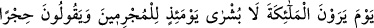
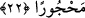
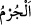
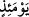

apaçık delili gördükleri halde başka bir delil ve mûcize istediler. Delil üstüne delil
isteyen kişi açıkça haddi aşmış, aşırı gitmiştir. Çünkü onlar gayba îman etmekle sorumlu
tutuldukları halde Allah’ı görmeyi istemişlerdir. Bu ise emrin gereğini yerine
getirmekten kaçış, emredileni yapmamak demektir. Çünkü bir şeyi gözle görme
sırasındaki îman gayba îman olmaz. Bu sebeple Allah onları azgınlıkla vasfetmiştir.”
22. (Fakat) melekleri görecekleri gün, günahkârlara o gün hiçbir sevinç haberi
yoktur ve: (Size, sevinmek) yasaktır, yasak! diyeceklerdir.
Fakat kıyâmet gününde “melekleri” azâb meleklerini “görecekleri gün, günahkârlara
o gün hiçbir sevinç haberi yoktur” yâni o gün günahkârlar müjdelenmezler.
Allah Teâlâ âyette daha işin başından onların melekleri görmesinin kendi isteklerinin
yerine getirilmesi yoluyla değil de alışılmadık başka bir şekilde olacağını bildirmek
üzere “meleklerin inecekleri gün” buyurmamıştır.
“__WORD__in asıl mânâsı meyveyi ağaçtan koparmaktır. Hoş olmayan her türlü kazanım
için da istiâre yoluyla kullanılmıştır. Âyette zamirle işârette bulunmak mümkün iken
“günahkârlar”ın açıkça zikredilmesi, onlar aleyhine içinde bulundukları küfürle birlikte
günahkârlıklarını da tescîl etmek içindir.
“__WORD__ (o gün)” kelimesi, te’kid için tekrarlanmıştır. Allah Teâlâ onların taleb ettikleri
şeyin mutlaka gerçekleşeceğini, fakat onunla hoşlanmadıkları bir şekilde
karşılaşacaklardır. Çünkü onlara bir müjde yoktur. Bilakis uyarma, korkutma ve azâb
etme vardır. Mü’minlerin durumu ise bunun aksinedir. Çünkü melekler onların üzerine
inerler, onları müjdelerler ve “Korkmayın, mahzun olmayın” (bk. Fussılet, 41/30)
derler.
Âyetin mânâsı, “Kıyâmet gününde Mekkeli kâfirlere hiçbir müjde yoktur.” demektir
“Ve:” günahkâr kâfirler melekleri gördükleri zaman: “(Size, sevinmek) yasaktır,
yasak! diyeceklerdir.” Araplar düşmanla ve kötü bir hücumla karşılaştıklarında
derlerdi. Buna göre mânâsı şöyledir: Onlar kendilerine meleklerin inmesini istiyorlar
ve bunu teklif ediyorlar, fakat kıyâmet gününde melekleri gördüklerinde onlarla
karşılaşmaktan şiddetle kaçınır ve hoşlanmazlar ve “(Size, sevinmek) yasaktır, yasak!”
derler. Halbuki onlar bu sözü bir belâ isâbet ettiğinde onun şerrinden Allah’a sığınıp
onunla karşılaşmalarını engellemesini istemek, bu kötü duruma mâni olup belânın
kendilerine isâbet etmemesini sağlamak için söylerlerdi.
Zâdü’l-(mesîr)’de şöyle rivâyet olunmuştur: “Kâfirler haram aylarda korktukları
birini gördüklerinde “Yasaktır, yasak!” diyerek o kimseye haram aylarda bulunduklarını
hatırlatmak isterler ve onun şerrinden emîn olurlardı. Mahşerde de bu kelimeyi